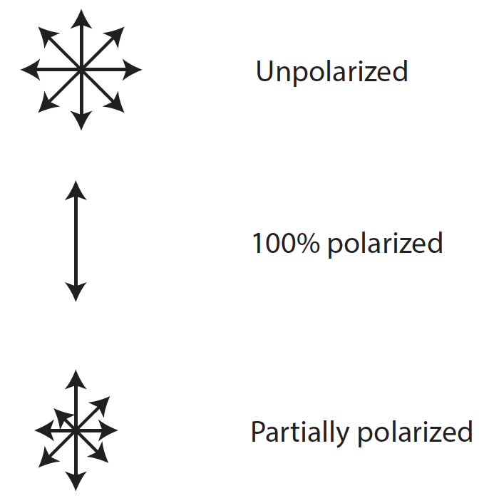

What is polarization?
Have you ever wondered why using polarized sunglasses while you are driving, or in a day out at the lake helps you see better? Have you ever, even accidentally, turned your head sideways and got blinded by the glare of the car driving in front of you even though you wear your polarized sunglasses? Why does that happen and what does that have to do with exoplanet and brown dwarf atmospheres?
Polarization: You have probably heard before that light is made of oscillating electric and magnetic waves (it can also behave like it is particles, but that is a whole other discussion...). Polarization has to do with the orientation of these waves in space. Natural light, like the light coming from a not very active star like our Sun, is comprised of waves that oscillate in all directions randomly. Natural light therefore has no prefered direction of oscillation and is called unpolarized. If for some reason (we will talk about this soon) there is a prefered direction of oscillation the light is polarized. How much polarized the light is, is measured in a percentage: when all waves oscillate in the same direction the light is 100% polarized, when half of the waves oscillate in the same direction and the other half in random directions the light is 50% polarized and so on. Can you guess what percentage of polarization unpolarized light has?
 Fig. 1. Imagine that the waves are coming out of your screen and that the peak of the wave is indicated by an arrow. If waves are similar in all directions, aka all arrows are similar, the light is unpolarized: there is no preferred direction (top panel). If waves oscillate in only one preferred direction, aka there are no arrows in other directions, the light is 100% polarized (middle panel). If a percentage of photons have a preferred direction of oscillation and the rest don't, aka some arrows are larger than the rest, the light is partially polarized (bottom panel).
How does light get polarized?
For light to get polarized it needs to interact with material in a way that part of, or all waves get a prefered direction of oscillation.
to do: - add figure - how do we get polarization? - examples: rainbow/ oceans (calm vs wavy)/ surfaces - polarization for planetary exploration